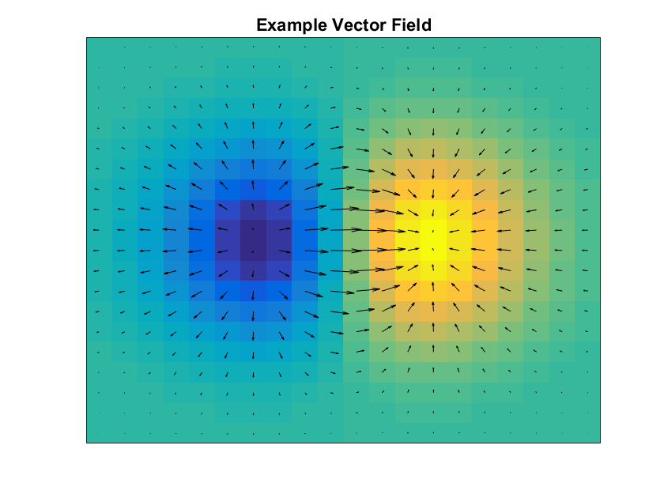
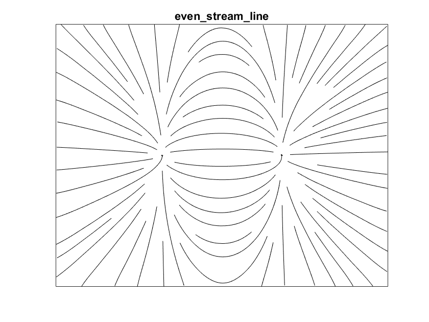
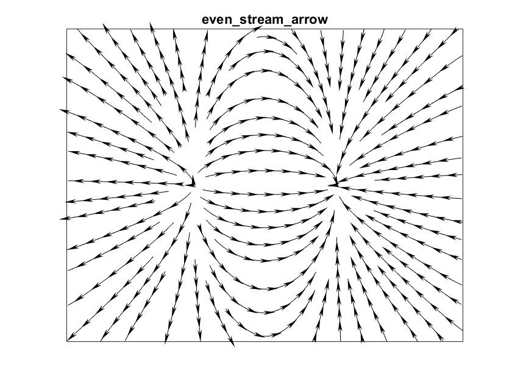
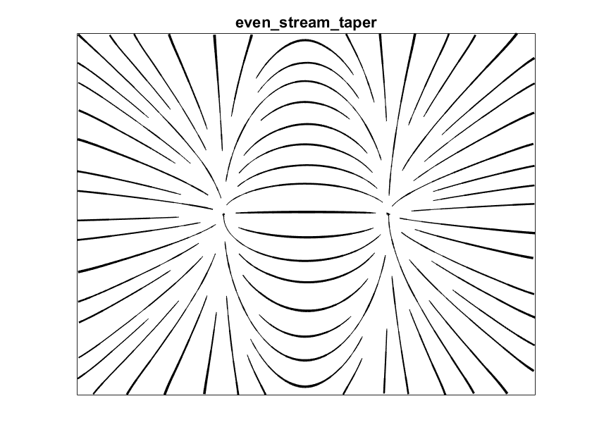
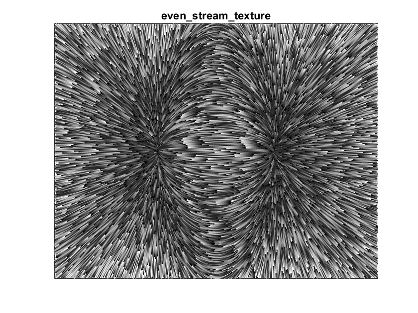

Evenly Spaced Streamlines
The purpose of this package is to plot evenly spaced streamlines for a 2D vector field with more flexible style options than the standard function streamslice(). Specifically, this package includes:
- "Fancy" arrow, taper, and texture styles as described Jobar & Lefer [1]
- Explicit control over both minimum and maximum streamline spacing
- Better selection of streamline step size for high line densities
The heavy-lifting of computing evenly-spaced streamlines is handled by a modified version of streamslice.m, which uses an algorithm quite similar to [1].
In the remainder of this document, each type of plot is genereated for an example vector field. Enjoy!
Contents
Example vector field
The vector field for is the gradient of a simple surface with a single local minimum and maximum.
% create vector field vv = linspace(-2, 2, 20); hh = vv(2)-vv(1); [xx, yy] = meshgrid(vv); zz = xx .* exp(-xx.^2 - yy.^2); [dzdx, dzdy] = gradient(zz, hh, hh); % plot surface and vector field hf = figure; hf.Name = sprintf('%s: example vector field', mfilename); quiver(xx, yy, dzdx, dzdy, 1.5, 'Color', 'k'); title('Example Vector Field'); ax = gca; ax.XTick = []; ax.YTick = [];
Simple stream lines
The even_stream_line() function plots evenly spaced streamlines using a simple line style. This function is quite similar to the Mathworks function streamslice(), with added control over the maximum streamline density and better results for high streamline densities.
tic hf = figure; hf.Name = sprintf('%s: even_stream_line', mfilename); even_stream_line(xx, yy, dzdx, dzdy, 1, 2, 'Color', 'k', 'LineWidth', 1); title('even\_stream\_line'); ax = gca; ax.XTick = []; ax.YTick = []; fprintf('even_stream_line: %.3f s elapsed\n', toc);
even_stream_line: 0.161 s elapsed
Plot stream lines with arrow glyphs
The even_stream_arrow() function adds arrow glyphs to indicate flow direction. The arrows are plotted using the 'arrow' package by Dr. Erik A. Johnson from the Mathworks File Exchange, which provides some control over arrow appearance.
tic hf = figure; hf.Name = sprintf('%s: even stream arrow', mfilename); even_stream_arrow(xx, yy, dzdx, dzdy, 1, 2, ... 'LineStyle', '-', 'LineWidth', 0.5, 'Color', 'k', 'ArrowLength', 4, ... 'ArrowTipAngle', 30, 'ArrowBaseAngle', 10, 'ArrowDensity', 2); title('even\_stream\_arrow'); ax = gca; ax.XTick = []; ax.YTick = []; fprintf('even_stream_arrow: %.3f s elapsed\n', toc);
even_stream_arrow: 0.913 s elapsed
Plot tapered stream lines
The even_stream_taper() function scales streamline width by the distance to the nearest neighboring line to produce a tapered "hand-drawn" effect.
hf = figure; hf.Name = sprintf('%s: even stream taper', mfilename); even_stream_taper(xx, yy, dzdx, dzdy, 1, 2, ... 'LineWidthMin', 0.5, 'LineWidthMax', 3, 'Color', 'k'); title('even\_stream\_taper'); ax = gca; ax.XTick = []; ax.YTick = []; fprintf('even_stream_taper: %.3f s elapsed\n', toc);
even_stream_taper: 3.436 s elapsed
Plot textured stream lines
The even_stream_texture() function adds a periodi grayscale pattern along the length of each line. For closely-spaced streamlines, this mimics the popular line-integral-convilution (LIC) visualization method.
hf = figure; hf.Name = sprintf('%s: even stream texture', mfilename); xy = even_stream_texture(xx, yy, dzdx, dzdy, 20, 40, ... 'LineWidth', 1, 'Period', 1); title('even\_stream\_texture'); ax = gca; ax.XTick = []; ax.YTick = []; fprintf('even_stream_texture: %.3f s elapsed\n', toc);
even_stream_texture: 12.158 s elapsed
References
- Jobard, B., & Lefer, W. (1997). Creating Evenly-Spaced Streamlines of Arbitrary Density. In W. Lefer & M. Grave (Eds.), Visualization in Scientific Computing ?97: Proceedings of the Eurographics Workshop in Boulogne-sur-Mer France, April 28--30, 1997 (pp. 43?55). inbook, Vienna: Springer Vienna. http://doi.org/10.1007/978-3-7091-6876-9_5